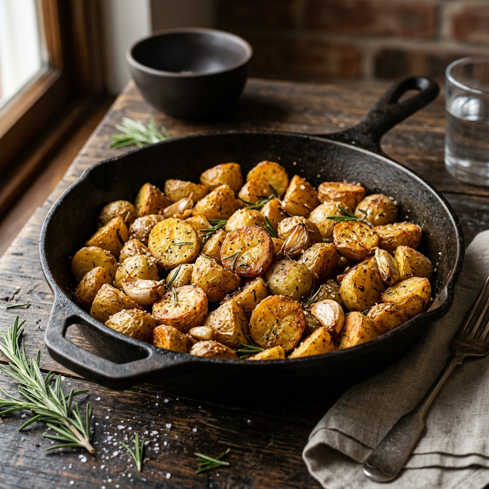

Description
Crispy on the outside and fluffy on the inside, these potatoes are seasoned with garlic and fresh herbs.
Ingredients
- 1kg Baby potatoes, halved
- 3 tbsp Olive oil
- 4 cloves Garlic, minced
- 1 tbsp Fresh rosemary, chopped
- 1 tsp Salt
- 1/2 tsp Black pepper
- 1 tbsp Fresh parsley, chopped (for garnish)
Instructions
- Preheat oven to 200°C (400°F).
- In a large bowl, toss the halved potatoes with olive oil, minced garlic, rosemary, salt, and pepper.
- Spread the potatoes in a single layer on a large baking sheet.
- Roast for 30-35 minutes, turning once halfway through, until golden brown and crispy.
- Remove from oven and sprinkle with fresh parsley before serving.